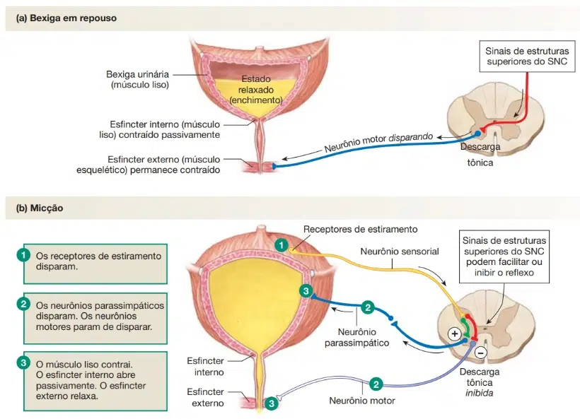
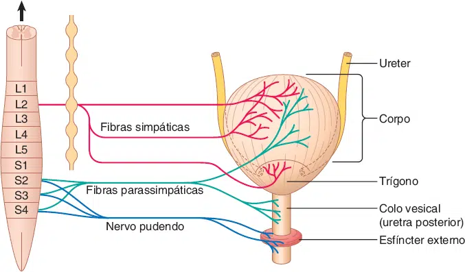
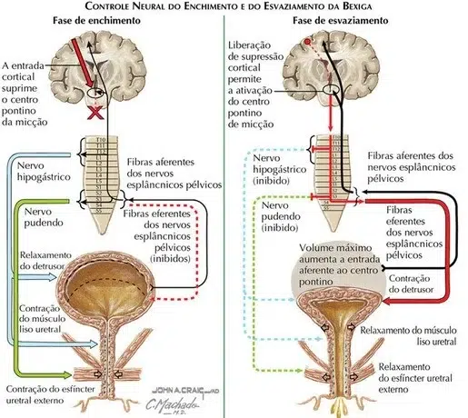

O controle neural da micção (ato de urinar) é um processo complexo que envolve a coordenação entre o sistema nervoso central (cérebro e medula espinhal) e o sistema nervoso periférico (nervos que conectam a medula espinhal à bexiga e aos esfíncteres).
Esse controle garante que a micção ocorra no momento adequado e de forma voluntária.
Tanto o enchimento como o esvaziamento da bexiga exigem uma ação coordenada do músculo detrusor e do esfíncter uretral.
Conforme a bexiga se enche de urina, suas paredes se distendem. Essa distensão é detectada por receptores sensoriais localizados na parede da bexiga, que enviam sinais para o sistema nervoso central.
Durante o enchimento, a leve distensão da bexiga produz sinais aferentes que percorrem os nervos pélvicos que faz parte do sistema nervoso parassimpático.
Esses sinais chegam à medula espinhal, na região sacral (S2-S4), onde são processados.
Estes sinais desencadeiam os reflexos espinais que aumentam o fluxo simpático ao longo dos nervos hipogástricos, causando o relaxamento do músculo detrusor e a contração do músculo liso ureteral.
Além disso, esses reflexos estimulam os neurônios originários do núcleo de Onuf localizado na medula espinal sacral, que viajam ao longo do nervo pudendo para estimular a contração do esfíncter externo da uretra.
Esta resposta, conhecida como o “reflexo da guarda“, previne a incontinência durante o enchimento da bexiga.


Quando a micção é iniciada, o sistema nervoso parassimpático envia sinais pelo nervo pélvico (S2-S4) para contrair o músculo detrusor e relaxar os nervos esfínteres.
O nervo hipogástrico (L2) através do sistema nervoso simpático é inibido. Inicia-se então, a contração da bexiga e o relaxamento do músculo esfíncter interno.
Ao mesmo tempo, o sistema nervoso somático envia sinais pelo nervo pudendo (S2-S4) para relaxar o esfíncter externo da uretra, permitindo a saída da urina.
Quando a distensão da bexiga atinge um ponto de ajuste, os sinais aferentes intensos ativam as vias ascendentes espino-bulbo-espinais que estimulam o centro pontino de micção (CPM, também conhecido como o núcleo de Barrington).
A ativação do CPM:
O efeito final é o relaxamento dos esfíncteres uretrais seguido de contração do detrusor, o que leva à micção.
Nos adultos, o CPM pode ser conscientemente suprimido até que o indivíduo deseje a micção. Tal supressão depende de contribuições de áreas corticais, que incluem o córtex pré-frontal, o córtex cingulado anterior e a substância cinzenta periaquedutal.
Em crianças, os reflexos sacrais primitivos promovem a micção sem o envolvimento de áreas cerebrais mais elevadas, como o CPM.
Esses reflexos se tornam eventualmente sujeitos ao controle do CPM e de entradas modulatórias do córtex pré-frontal.
